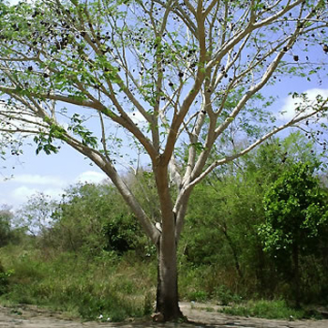
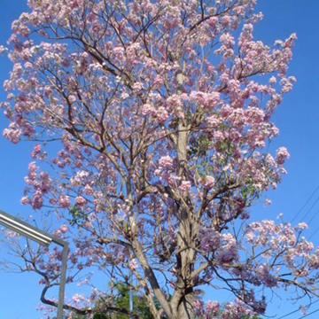

Plantas Endémicas de Yucatán.
En Yucatán, algunas plantas endémicas incluyen el balché, el jabín, el kitanché y el makulis. También hay varias especies de orquídeas endémicas, como la Epidendrum martinii. El Gobierno del Estado de Yucatán enumera varias plantas, incluyendo la caoba, el cedro, la ceiba y el zapote.
.jpg)
El "balché" se refiere a una bebida alcohólica tradicional mexicana, particularmente de la cultura maya de la península de Yucatán, así como a un árbol del que se obtiene la corteza para preparar esta bebida.
.jpg)
El palo mulato es un árbol de hasta 35 m de alto, resinoso y aromático, tronco torcido, corteza rojiza o verdosa, desprendible en capas papiréceas. Hojas de 18 a 40 cm, con 7 a 13 foliolos de 5 a 9 cm de largo y 2 a 4 cm de ancho, imparipinnados, foliolos oblongos asimétricos, acuminados en el ápice.
.jpg)
Árbol que alcanza hasta 20 m. de altura, caducifolio, copa densa, corteza fisurada, hojas ovadas compuestas imparipinnadas, foliolos elípticos verde oscuros, flores en panículas ligeramente perfumadas, pétalos rosados o ligeramente morados florea de febrero a mayo, frutos en forma de vaina con alas de color café y alargados quebradizos al madurar.

Árbol grande y llamativo, caducifolio, de 20 a 30 m. de altura, follaje abundante, hojas bipinnadas los foliolos se pliegan en la noche, ramas ascendentes, corteza lisa a granulosa gris clara con abundantes lenticelas alargadas; flores en pequeñas cabezuelas pedunculadas actinomórficas, caliz verde y tubular, corola verde clara, florece de marzo a mayo; el fruto es una vaina circular indehiscente de 7 a 15 cm.

Árbol de hasta 15 mts. de altura, el tronco es recto y fisurado y la copa piramidal; las flores son de color rosa-morado, muy vistosas, dispuestas al final de las ramas; los frutos son cápsulas de 30 a 40 cms. de largo, ligeramente retorcidos.
DERECHOS RESERVADOS © SAUL RAMÓN
|